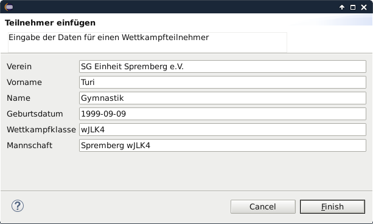
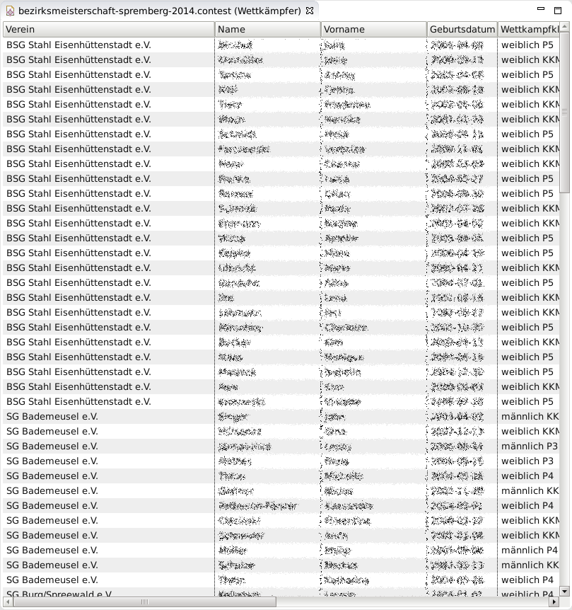
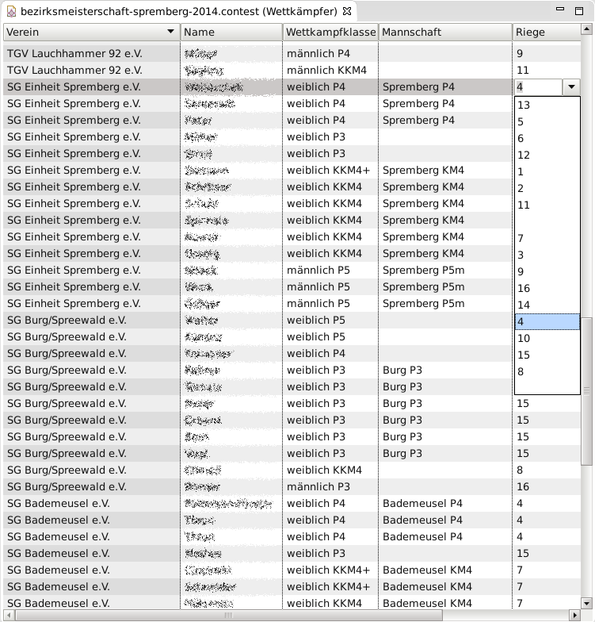
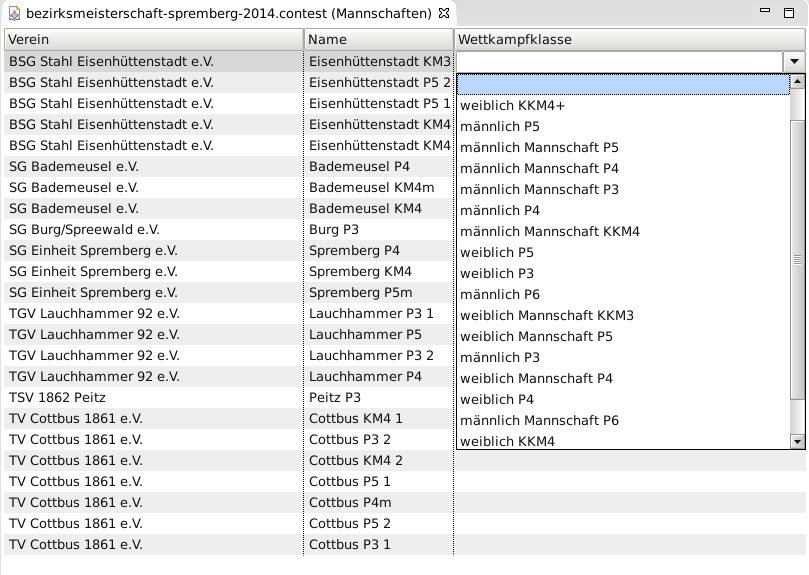
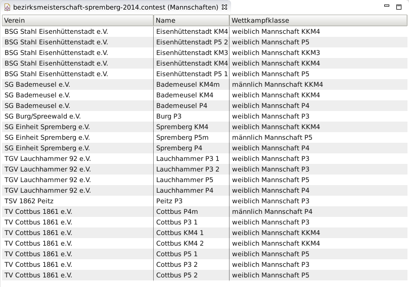
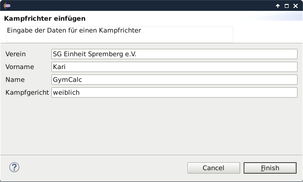
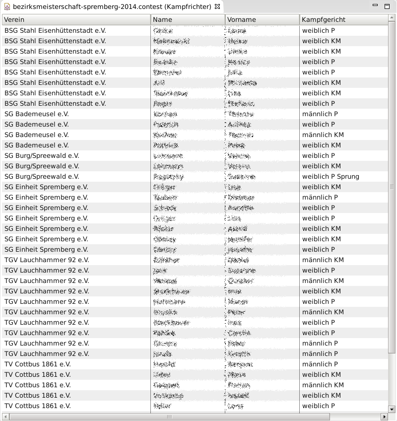

Ist eine Wettkampfdatei angelegt und eingerichtet (siehe Einrichten eines Wettkampfes), so können ankommende Meldungen eingegeben werden. Die Aktiven werden über den Editor "Wettkämpfer" und die Kampfrichter über den Editor "Kampfrichter" getrennt eingegeben. Die Eingabe kann durch früher eingegebene Kontakte unterstützt werden. Allerdings ist dazu ein spezielles Modul notwendig, welches (aufgrund des frühen Entwicklungsstandes) hier noch nicht publiziert werden soll.
Die entsprechenden Schritte zur Eingabe der Meldungen sind:
Procedure 11. Eingabe der Wettkämpfer
Vorraussetung zur Eingabe der Wettkämpfer ist, dass eine Wettkampfdatei angelegt und eingerichtet ist.
-
Öffne den "Wettkämpfer"-Editor. Hierfür gibt es mehrere Methoden:
- Drücke im "Übersicht"-Editor auf Wettkämpfer.
- Wähle im Menu →
- →
-
Wähle im Menu → ( Ctrl+n )
-
Gib Verein, Vorname, Name, Geburtsdatum, Wettkampfklasse und Mannschaft ein. Das Datum muss der Form Jahr-Monat-Tag (JJJJ-MM-TT) also beispielsweise 1999-12-20 entsprechen. Ist der genaue Tag nicht bekannt, dann macht es sich gut wenn der 1.1. verwendet wird. Die Wettkampfklasse sollte bereits wie beim Einrichten eines Wettkampfes sein. Die Mannschaft ist hier ein frei wählbarer Name. Dieser sollte allerdings eindeutig sein. Ist der Wettkämpfer in keiner Mannschaft oder handelt es sich nicht um einen Mannschaftswettkampf, dann ist das Mannschaftsfeld leer zu lassen.
![[Note]](assets/images/note.svg)
Note Alle eingegebenen Daten bis auf das Geburtsdatum lassen sich nachträglich ändern.
Die Mannschaften (sofern noch nicht vorhanden) werden einer neuen, leeren Wettkampfklasse zugeordent. Die Zuordnung der Mannschaft zur richtigen Wettkampfklasse erfolgt im Zuordnen der Mannschaften zu Wettkampfklassen
Wird als Wettkampfklasse ein Name verwendet, der noch nicht angelegt wurde, so wird eine neue Wettkampfklasse mit diesem Namen angelegt. Die neu angelegte Wettkampfklasse enthält aber noch keine Disziplinen. Das automatische Neuanlegen von Wettkampfklassen vereinfacht die Verwendung von GymCalc als Meldewerkzeug.
Drücke auf .
 -
Wiederhole die vorigen Schritte bis alle Wettkämpfer der Meldung eingetragen sind.
Note Der Dialog zum Eingeben neuer Wettkämpfer wird mit den Daten des im "Wettkampf"-Editor selektierten Wettkämpfer befüllt. Dies erleichtert die Eingabe.
-
Speichere die Datei mittels →

Procedure 12. Zuordnen von Wettkämpfern zu Riegen / Riegeneinteilung.
Die Riegeneinteilung erfolgt in der Regel nachdem alle Meldungen eingegangen sind und die Anzahl der Starter in den einzelnen Wettkampfklassen bekannt ist. Die hier dargestellte Riegeneinteilung besteht darin, dass nacheinander jeder Wettkämpfer einer Riege zugeordnet wird.
-
Öffne den "Wettkämpfer"-Editor. Hierfür gibt es mehrere Methoden:
- Drücke im "Übersicht"-Editor auf Wettkämpfer.
- Wähle im Menu →
- →
-
Nun sind im "Wettkämpfer"-Editor durch Klick mit der Maus in die ensprechende Zelle die Riege für jeden einzelne Wettkämpfer zu wählen. Es ist darauf zu achten, dass die gewählte Riege auch die richtigen Stationen für den Wettkämpfer anläuft. Es macht wenig sinn, wenn ein Mädchen in einer Riege ist, die nur Jungsgeräte anläuft.
Note Die Zelle für die Riege ist auf der Rechten Seite. Entweder ist das Eingabefenster entsprechend zu vergrößern oder der untere Rollbalken muss ganz nach Links geschoben werden. Es ist auch möglich wie im Screenshot zu sehen die Spalten zusammenzuschieben.
Drücken auf die Überschrift sortiert die gesamte Tabelle nach der entsprechenden Spalte. Damit können die Wettkämpfer einfach nach Verein oder Wettkampfklasse sortiert werden. Das hilft, wenn beispielsweise alle Wettkämpfer eines Vereines in einer Riege sein sollen.
 -
Speichere die Datei mittels →
Procedure 13. Zuordnen von Mannschaften zu Wettkampfklassen.
Mit der Eingabe der Wettkämpfer werden auch die Mannschaften angelegt. Diese neuen Mannschaften sind allerdings einer leeren Wettkampfklasse zugeordnet und müssen demzufolge noch der richtigen Wettkampfklasse zugeordnet werden.
-
Öffne den "Mannschaften"-Editor. Hierfür gibt es mehrere Methoden:
- Drücke im "Übersicht"-Editor auf Mannshaft.
- Wähle im Menu →
- →
-
Nun sind im "Mannschaften"-Editor durch Klick mit der Maus in die ensprechende Zelle die Wettkampfklassen für jede einzelne Mannschaft zu wählen. Es ist darauf zu achten, dass wirklich Wettkampfklassen, in denen Mannschaften bewertet werden, auszuwählen sind. Es macht keinen Sinn eine Mannschaft einer Wettkampfklasse für Einzelwertungen zuzuordnen.
 -
Speichere die Datei mittels →

Procedure 14. Eingabe der Wettkämpfer
Vorraussetung zur Eingabe der Kampfrichter ist, dass eine Wettkampfdatei angelegt ist.
-
Öffne den "Kampfrichter"-Editor. Hierfür gibt es mehrere Methoden:
- Drücke im "Übersicht"-Editor auf Kampfrichter.
- Wähle im Menu →
- →
-
Wähle im Menu →
-
Gib Verein, Vorname, Name und Kampfgericht ein. Das Kampfgericht ist hier ein frei wählbarer Name. Mit diesem Namen werden die Kampfrichter während der Meldung gruppiert. Hier ist es sinnvoll wie "weiblich" und "männlich" zu verwenden.
Note Alle eingegebenen Daten lassen sich nachträglich ändern.
Gewöhnlich werden die Kampfgerichte durch die Hauptkampfrichter eingeteilt. Dazu werden die während der Meldung angegebenen Kampfrichter in deren Gruppen an die Hauptkampfrichter gegeben, dieser teilt die Kampfgerichte ein. Anschließend werden diese Kampfgerichte in einem späteren Schritt hier in GymCalc eingegeben.
Drücke auf .
 -
Wiederhole die vorigen Schritte bis alle Kampfrichter der Meldung eingetragen sind.
Note Der Dialog zum Eingeben neuer Kampfrichter wird mit den Daten des im "Kampfrichter"-Editor selektierten Kampfrichter befüllt. Dies erleichtert die Eingabe.
-
Speichere die Datei mittels →
